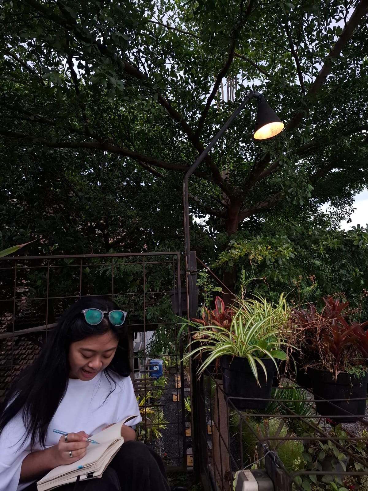
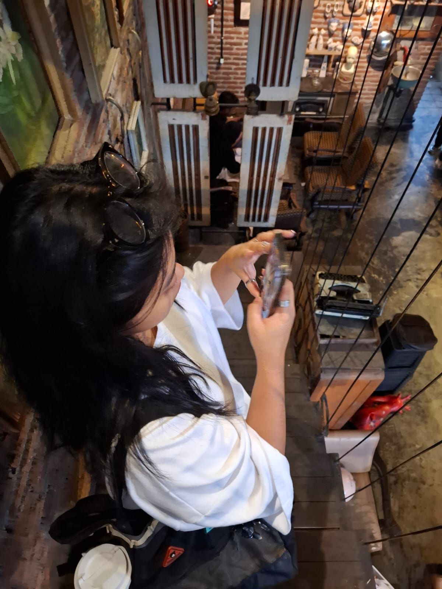

Untuk Kakak Adel🌸
Aku tahu kok mungkin ini sederhana.
Kan kak adel suka photography,
Aku juga ada sii beberapa fotonya kak adel, HEHEHE.
(Sorry ngambilnya diem" :) )
Kak adel punya cara sendiri membuat hal biasa terasa lebih menarik, asik, seru dan fun.
Mungkin bagi Kak Adel itu hal kecil tapi bagi kuu ngga kok.
Aku mungkin masih harus banyak belajar,
tapi satu hal yang pasti
Aku tulus menghargai dan mengagumi kak adell <3.
Aku tau mungkin akhir" ini terasa berat,
Tapi aku juga yakin Kak Adel pasti bisa kokk
SEMANGATT KAKKK
Happy Valentine’s Day 🤍

